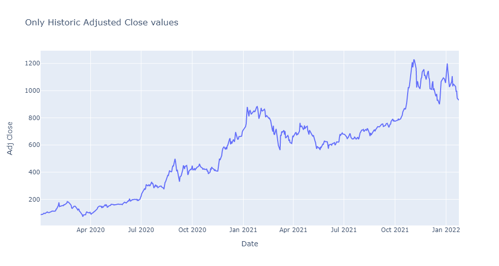
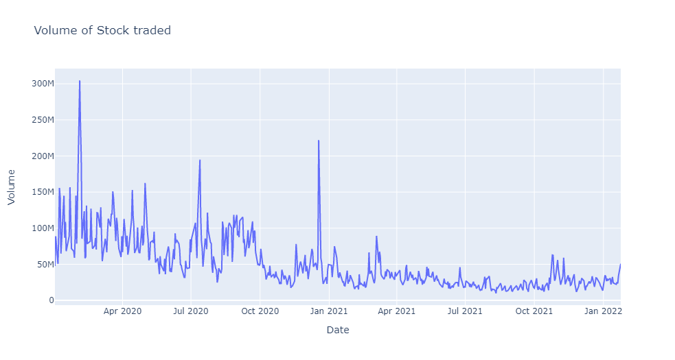
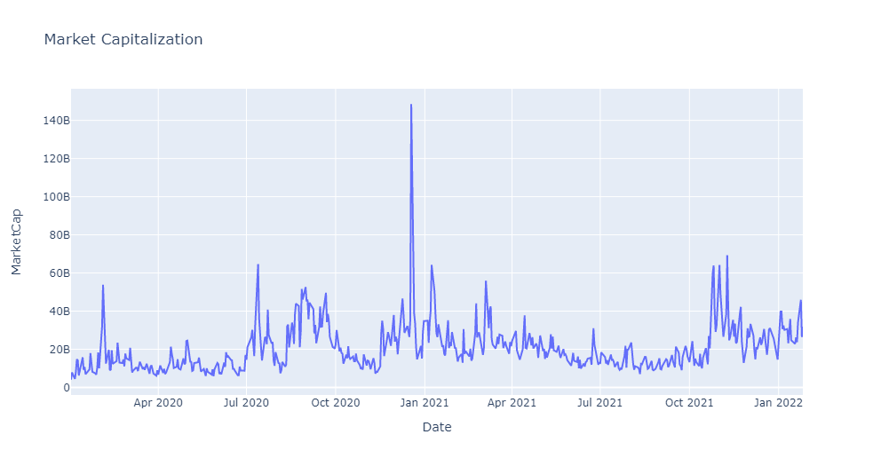
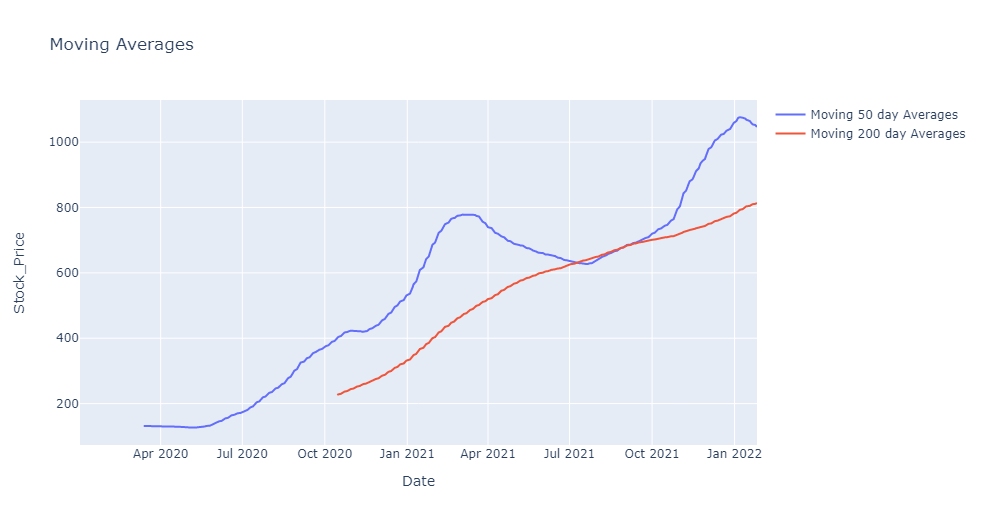
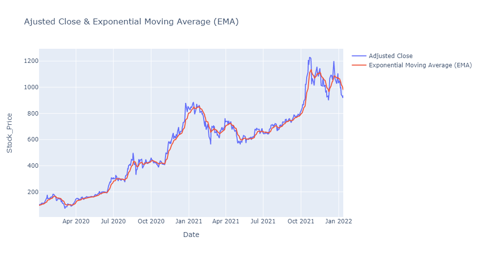

Machine Learning: Predicting Stock Prices with Linear Regression
A machine learning project to predict Stock Prices using the Python libraries Pandas, Numpy, SKlearn and Plotly.

Project overview
- This is a Machine Learning Project of the Telsa Stock price dataset (from 2020 to 2022).
- I used a linear regression method to predict the past prices using a EMA10 indicator as reference.
- The project was made for educational purpose and his values are not an investment advice
- The tools used are the next Python libraries: Pandas, Numpy, Plotly and Sk-Learn.
- The prices was obtained from Yahoo Finance site
- All the files can be downloaded from my GitHub Repository.
Objectives
The goal is to train a machine learning model that tries to predict TSLA stocks prices in a range of 10 days. The data used correspond to the period of 2020-2021 to understand how the pandemic is currently affecting the performance of the company.
Data transformation and data preparation
All the data was taken from Yahoo Finance site as a CSV. Only was used data from 01/01/2020 to 26/01/2022.
Data Analysis
Candle Chart
A candlestick chart is a financial chart to describe price movements of a security, derivative, or currency. Each candlestick represents all four important information for that day:
- Open: The price of the stock when the market opens in the morning
- Close: The price of the stock when the market closed in the evening
- High: Highest price the stock reached during that day
- Low: Lowest price the stock is traded on that day
Adjusted Close
Adjusted close is the closing price after adjustments for all applicable splits and dividend distributions.
Volume
Volume measures the number of shares traded in a stock or contracts traded in futures or options. Volume can indicate market strength, as rising markets on increasing volume are typically viewed as strong and healthy. When prices fall on increasing volume, the trend is gathering strength to the downside.
Market Capitalization
Market capitalization (or market cap) is the total dollar value of all the shares of a company's stock. To calculate a company's market capitalization, multiply its stock's current price by the total number of outstanding shares.
Moving Averages (20-50 days)
In statistics, a moving average is a calculation to analyze data points by creating a series of averages of different subsets of the full data set. It is also called a moving mean or rolling mean and is a type of finite impulse response filter. Variations include: simple, cumulative, or weighted forms.
Exponential Moving Averages (10 days)
The exponential moving average (EMA) is a technical chart indicator that tracks the price of an investment (like a stock or commodity) over time. The EMA is a type of weighted moving average (WMA) that gives more weighting or importance to recent price data.
Machine Learning
Linear Regression Model
linear regression is a linear approach for modelling the relationship between a scalar response and one or more explanatory variables.

Conclusions
- The all time High value was 1243 USD [$] at 2021-11-04.
- The all time Low value was: 70 USD [$] at 2020-03-18
- The max volume was 304M at 2020-02-04
- The model score is around 98%
- The market volatility and a variety of other variables make extremely difficult to anticipate the rise and fall of the market with great precision.